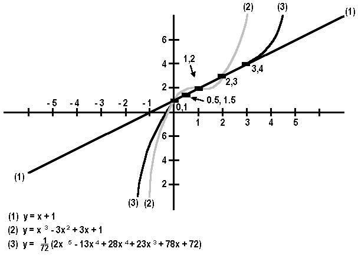

 |
| Figure 5-2 Analogous to our conceptual attempt to "cover" observational facts with theories, given any number of points on a Cartesian graph an infinite number of lines can be theoretically constructed to cover or connect the points. Given the points (0,1), (1,2), and (2,3) both equations (1) and (2) connect the points. By adding another point, (3,4), equation (1) will connect this point, but not equation (2). However, a new equation (3) can be created that also connects all the points. (Graph and equations by James C. Reeder, Honolulu Community College) |